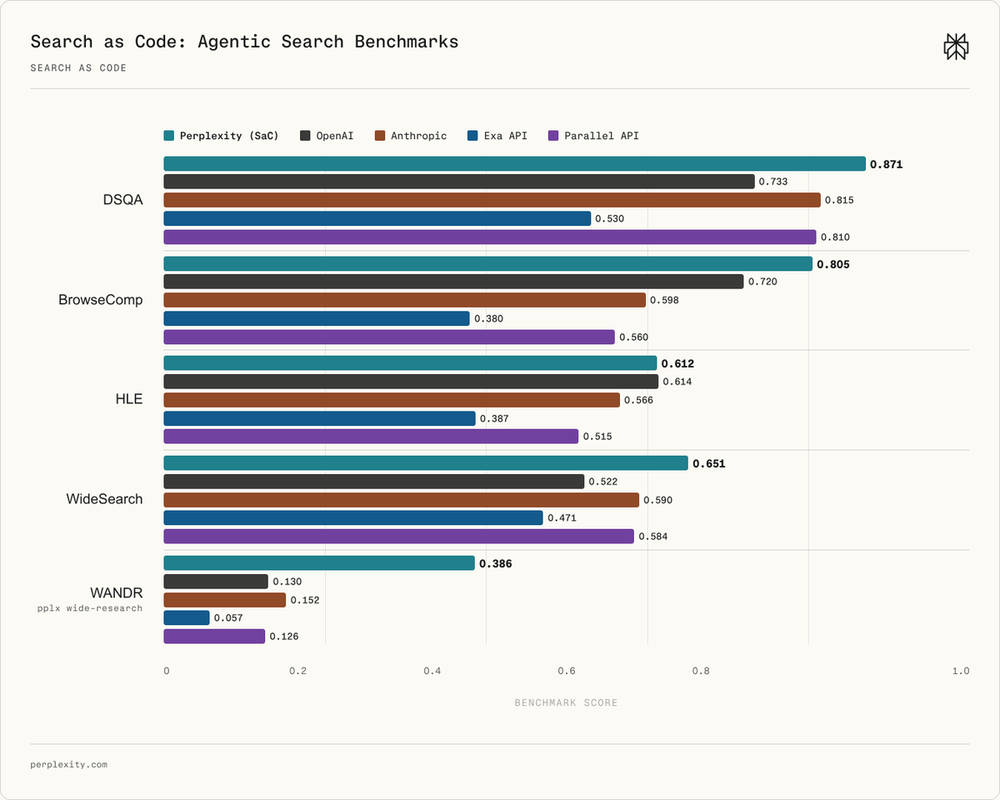

Script
Ready
Bấm vào slide để bắt đầu...
Âm Thanh
Ready
Search as Code
agent tự viết Python để research
Vòng lặp cũ
turn 1search()
WAIT
turn 2search()
WAIT
model
search
context
nhiễu tăng dần
Search as Code
secure sandbox
def research(task):
hits = search_many(task)
return rank(dedupe(hits))query Aquery Bquery Cquery D
dedupe
filter
join
rank
context gọnQuyền điều khiển
retrieval operations100 → 1.000+
trong vài phút
1 lượt suy luận
modelchọn chiến lược
codechạy lặp, lọc dữ liệu
Benchmark khá mạnh

DSQA0,871vs Anthropic 0,815 PerplexityWANDR0,386Search as Code
vsđứng sau0,152hệ thống kế tiếp
WANDRbenchmark nội bộchưa được phát hành
Case rà CVE
200+CVE nghiêm trọng
MozillaChromeAndroidJenkinsaccuracy100%
token
288,7K42,9K
−85,1%Cộng đồng nói gì?
Code là lớp thực thibớt chuỗi tool call cứng nhắc
Python lỗi thì debug sao?có xem được kế hoạch không?
Không xóa được mọi giới hạnHTTP error · rate limit · code lỗi
Điểm đáng xem
model
code
thông tin
đã có trongAgent APIComputer
Test bằng task research thậtbenchmark hiện vẫn do Perplexity tự công bố
x.com/perplexity_ai
1/8